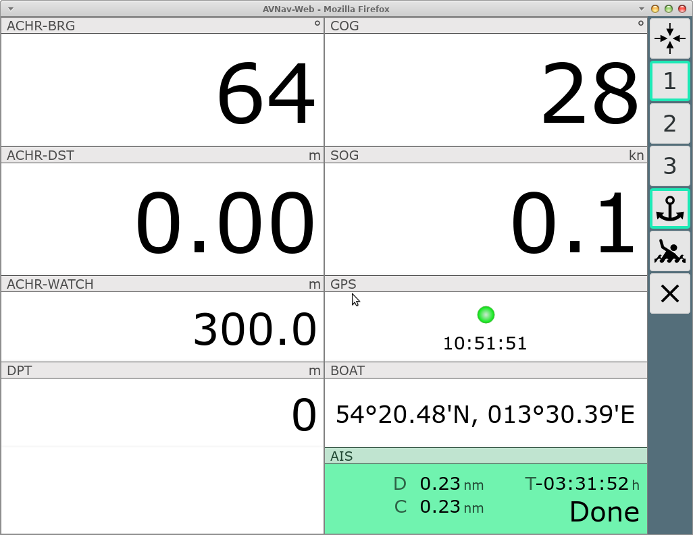

Using the button (000) on the mainpage or by clicking on the lower right display on the navigation page you will reach this page. There is no need for an available chart to display this page.
You can configure up to 5 dashboard pages in the layout.

| Icon | Name | Function |
| GpsCenter | center chart to waypoint and go back to previous page | |
| 1,2,... | Gps1, Gps2, ... | select the dashboard you would like to display. You can customize the display by selecting an available layout at settings->layout or you can adapt the layout using the layout editor. |
| AnchorWatch | activate anchor watch, ssee below | |
| MOB | Man over Board (see main page) | |
| Overflow |
Show a second button list if the screen is too small for all
buttons. Only visible if you did not select "2 button columns" at
Settings/Layout. |
|
| Dim |
Dim Mode. The screen will be dimmed and all buttons become
inactive. Leave this state by clicking anywhere on the screen. This button is only visible in the Android app or when using the BonjourBrowser (version 1.5 and above). This button really dims the complete screen. This way you can limit the power consumption of your device if you do not need an instant display. It can also prevent overheating when running on high brightness and on high temperatures. |
|
| Cancel | back to previous page |
Clicking on the AIS target (lower right) will move you to the AIS page, any other click will get you back to where you came from.
By clicking on the  button you activate the anchor watch.
button you activate the anchor watch.

In the dialog you will select the radius that is tolerated around the current position (the default can be changed at settings).
After activation the  button will have a green border and the supervision
will start. If your boat will move outside the defined radius an alarm
will be switched on. Additionally a loss of the GPS signal will also
switch on an alarm. The supervision is done at the server side - so you
can switch of any display. But you need to have a sound device at your
server in this case.
button will have a green border and the supervision
will start. If your boat will move outside the defined radius an alarm
will be switched on. Additionally a loss of the GPS signal will also
switch on an alarm. The supervision is done at the server side - so you
can switch of any display. But you need to have a sound device at your
server in this case.
When the anchor watch is active some dashboard pages will change their content.
